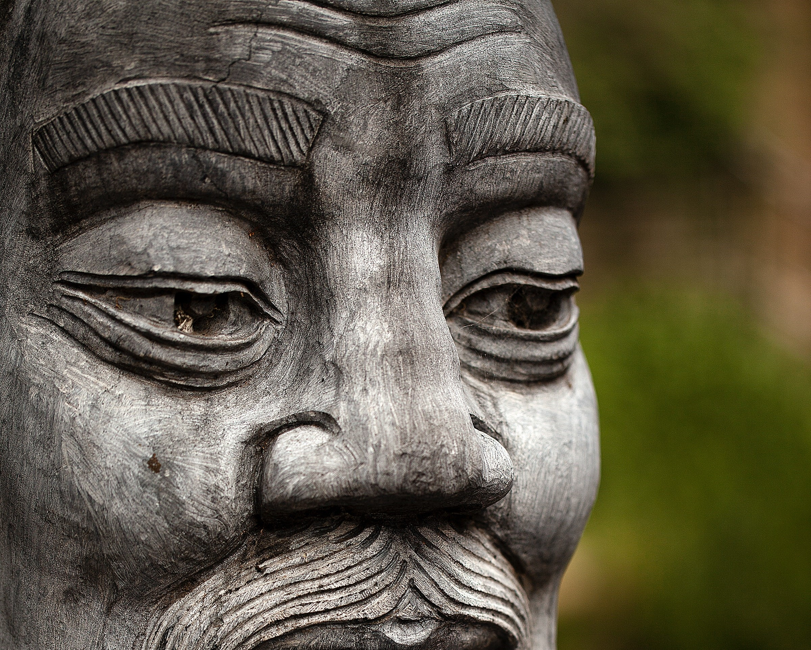

Introduction
Confucius was a Chinese philosopher with interesting thoughts about one’s view on regulation, hierarchy and morality. The Ancient philosopher still has an undeniable impact on Asian culture. As the Wall-Street Journal pointed out, China’s president Xi said the following about this legacy.
“Confucianism,” Xi said, is key to “understanding the national characteristics of the Chinese as well as the historical roots of the spiritual world of the present-day Chinese.”
Whereas the records of Confucius' thought focus more on ethics, he passed on enough political notions that we might call him a 'political philosopher'.
Hierarchy
Perhaps Confucius best-known political notion is that a form of hierarchy is good for both subject and master. Confusius found that superiors must be given due respect from those under them. This Asian form of 'enlightened absolutism' dóes include a subject's right to advise his superior in case of wrongdoing. Because, in Confucius' thinking, 'the wrong' manifests itself when a human does not act virtuously. He thought, a leader must be a good man from the ground up - and lead by example.
Confusius suggested that with good leadership comes prosperity and peace. If a leader leads well, his subjects will feel no natural need to revolt. If people act based on their best moral action, Confucius thought the subject's reaction would be so proper that there would be no need for punisment.
Regulation
Another aspect of Confius' political theory that might foster peace within his ideal system concerns his view on rules. Confusius believed that rules should not be a black-and-white order sheet to follow. Instead, one should use rules as a guideline to purely consider what is morally right to do in a certain situation.
Liberal Arts
We know rulers today as hyper-efficient, busy people that share little personal notions and instead convey clear, serious - one might even say robotic - messages. Confusius thought that a leader should exhibit a strong personal side. A Confucian notion that often recurs in accounts on his philosophy is 'Rén' or '仁'. This chinese word translates into 'humanness' and reiterates for us that a strong leader must be a morally right human inside and out.

We know of no written work that was passed down by Confusius. So, all that we know about his philosophy lends itself to the accounts that were by his students. Throughout his life, Confusius had many students, both rich and poor. He sought to instill in them a virtuous way of thinking, and share to them how important it is to act honestly and with a 'good heart'.
A harmony of heaven and earth within the individual
Confusius believed that a human and, especially, a leader must exhibit the five basic virtues (seriousness, generosity, sincerity, diligence, and kindness) in such a way that one becomes these virtues and, by extention, ís virtuous. To help one reach this state of proper virtue, one can consume or create music and poetry. This way, a man harmonizes the abstract with the concrete in his life. Or in more Confucian language 'a harmony of heaven and earth'.
Confucius suggests that a leader who makes regulation without proper morality (harmony) is poisonous. A leader who leads without 'a soul' and simply carries out heartless population manamgement is not only leprous to himself but also leprous to society.
All in all, Confucius' state philosophy can best be summarized by a strong importance of proper morality in the individual. One must respect the experience and authority of superiors, but when either subject or leader exhibits immoral action, the country deteriorates and all will suffer its effect. Indeed, Confusius thought that righteousness and truth must not only amplify one's words but source them.